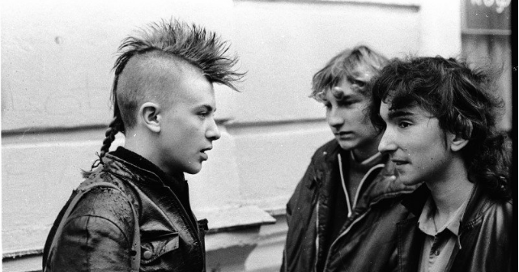

Визначення «неформал» походить від словосполучення «неформальні об'єднання молоді», що виникло в протиставлення «формальним» об'єднанням: комсомольської організації і іншим, що допускалися владою в той час. «Неформалів» в середині 80-х років співробітники органів внутрішніх справ та місцевих організацій КПРС називали найрізноманітніші неофіційні, самодіяльні співтовариства молодих людей — групи соціальної ініціативи, клуби за інтересам і підліткові банди. Спочатку слово «неформал» носило досить яскраво виражене негативне забарвлення і не було самоназвою представників субкультур, а мало на меті принизити горизонтальну ініціативу молодого суспільства. У сучасній розмовній мові застосовують і скорочені форми — «Нефори» «Ніфори», «ніфери» та інше
У УРСР молодіжні субкультури в цілому не відрізнялися великою різноманітністю. Причинами цього, ймовірно, була жорстка цензура, недоступність зарубіжної музики та періодики, ізольованість тоталітарного суспільства, неможливість створення непідконтрольних комсомолів і молодіжних клубів. Найбільш масовим і помітним молодіжним рухом з кінця 70-х до початку 90-х років XX століття була так звана «Система» — контркультурний, демонстративно-карнавальний рух, субкультура якого була заснована на двох контркультурних стилях: хіповського і панківському. Головною характерною особливістю молодіжної субкультури є її відособленість, відстороненість, часто демонстративна, епатажна, від культурних цінностей старших поколінь та суспільних стереотипів, національних традицій. У масовій свідомості сприйняття молодіжної субкультури часто має негативний характер через наслідки пострадянської тоталітарної ксенофобії та невігластво. На цьому тлі молодіжна субкультура зі своїми специфічними ідеалами, модою, мовою, мистецтвом все частіше оцінюється як контркультура. Іншою характерною особливістю сучасної молодіжної субкультури є переважання творчості. Характерною особливістю молодіжної субкультури можна назвати її авангардность, спрямованість у майбутнє, часто — екстремальність. Характерними аксесуарами неформалів (по перевазі хіпі) вважалися:
фенечки (браслети з ниток або бісеру);
бандани;
Рвані джинси;
Браслети з гостирими елементами;
Нашийники, що носять на шиї;
Аніме-деталі одягу і аксесуари;
Власний креативний одяг і його переробка самостійними силами;
Ношення одягу іншої статі, в знак протесту проти ґендерних стереотипів.
Усе це популярне у колах вітчизняних неформалів і по-сьогодні. На початку 90-х «Система» розпалася на кілька відносно незалежних субкультур (панків, металістів, готів, ролевиків і інших) і перестала існувати як цілісний рух. Негласну підтримку неформалам надавала «нова» влада. Крім «Системи», до «неформалів» відносили і близькі по духу рухи — КСП (клуби самодіяльної пісні), «Фендом». Неформали викликали жорстке неприйняття у основної маси населення, просякнутої радянською пропагандою, що часто виливалося в сутички і бійки. Основними ворогами неформалів були любери (підлітки — «качки»). Неформали намагалися уникати зустрічей з ними, навіть будучи в чисельній перевазі (саме велике зіткнення було в 1987 році на Кримському мосту, багато народу з обох сторін було скинуто у воду). Рух люберів проіснував кілька років і в 1990-х роках розпався, поступившись місцем наростаючим неформалам. В даний час термін «неформали» часто вживається як самоназву представниками різних субкультур (Емо, Готи, Челкарі, Анімешники) що протиставляють себе мейнстріму.
У УРСР молодіжні субкультури протестного та екстремального характеру в цілому були малорозвинені і мали вкрай вузьке коло адептів; широке розповсюдження мали субкультури активно-творчого, романтичного і альтруїстичного спрямування. Причиною цього, імовірно, була висока ступінь ізоляції груп молоді один від одного і від суспільства в цілому, широке охоплення загальної маси молоді безліччю клубів за інтересами, доступність закладів культури, масове впровадження в школах офіційної пропагандиської ідеології позитивної спрямованості («людина людині друг, товариш і брат»), що пригнічувала розвиток особистості, офіційна жорстка цензура і відсів протестного режиму матеріалу, що міг спровокувати бунти і революції. Водночас відсталість офіційної влади та ідеології приводила до виникнення протестних настроїв також і в субкультурах «позитивної» спрямованості. Найбільш поширеними в СРСР молодіжними субкультурами були:
Хіпі;
Металісти;
Панки;
Рокери;
Стиляги;
Любера.
Представники «Системи» вели підкреслено асоціальний спосіб життя (наркотики, алкоголь, сигарети), характерними елементами якого були:
сейшени (від англ. session) — «квартирні» або підпільні концерти;
автостоп — подорож;
сквоти — самовільне захоплення покинутих будівель і створення комун;
тусовки — традиційні місця зустрічей.
Сучасні неформали, поширені після 2000-х років, також не сильно відрізнялися способом життя від своїх попередників, але мали більшу свободу у поширенні своєї діяльності і мислення. У росії були найпопулярнішими рухи емо, готів і фанатів Аніме. Зокрема, в Україні, були дуже поширені фанати аніме і манги, які вели більш гарний спосіб життя, і відзначалися творчою креативною діяльністю. Також були поширені емо. Наразі, неформальні рухи трохи затихли, і їх замінили псевдо-неформальні стильові замінники, такі як хіпстери та інші.